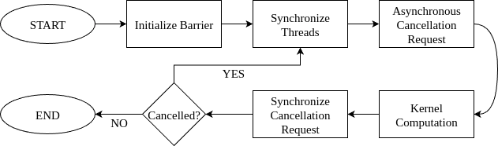

4.12. Work Stealing with Cluster Launch Control#
Dealing with problems of variable data and computation sizes is essential when developing CUDA applications. Traditionally, CUDA developers have used two main approaches to determine the number of kernel thread blocks to launch: fixed work per thread block and fixed number of thread blocks. Both approaches have their advantages and disadvantages.
Fixed Work per Thread Block: In this approach, the number of thread blocks is determined by the problem size, while the amount of work done by each thread block remains constant.
Key advantages of this approach:
Load balancing between SMs
When thread block run-times exhibit variability and/or when the number of thread blocks is much larger than what the GPU can execute simultaneously (resulting in a low-tail effect), this approach allows the GPU scheduler to run more thread blocks on some SMs than others.
Preemption
The GPU scheduler can start executing a higher-priority kernel, even if it is launched after a lower-priority kernel has already begun executing, by scheduling its thread blocks as thread blocks of the lower-priority kernel complete. It can then resume execution of the lower-priority kernel once the higher-priority kernel has finished executing.
Fixed Number of Thread Blocks: In this approach, often implemented as a block-stride or grid-stride loop, the number of thread blocks does not depend on the problem size. Instead, the amount of work done by each thread block is a function of the problem size. Typically, the number of thread blocks is based on the number of SMs on the GPU where the kernel is executed and the desired occupancy.
Key advantages of this approach:
Reduced thread block overheads
This approach not only reduces amortized thread block launch latency but also minimizes the computational overhead associated with shared operations across all thread blocks. These overheads can be significantly higher than launch latency overheads.
For example, in convolution kernels, a prologue for calculating convolution coefficients – independent of the thread block index – can be computed fewer times due to the fixed number of thread blocks, thus reducing redundant computations.
Cluster Launch Control is a feature introduced in the NVIDIA Blackwell GPU architecture (compute capability 10.0) that aims to combine the benefits of the previous two approaches. It provides developers with more control over thread block scheduling by allowing them to cancel thread blocks or thread block clusters. This mechanism enables work stealing. Work stealing is a dynamic load-balancing technique in parallel computing where idle processors actively “steal” tasks from the work queues of busy processors, rather than wait for work to be assigned.
{kind=link}

Figure 51 Cluster Launch Control Flow#
With cluster launch control, a thread block attempts to cancel the launch of another thread block that has not started executing yet. If the cancellation request succeeds, it “steals” the other thread block’s work by using its index to perform the task. The cancellation will fail if there are no more thread block indices available or for other reasons, such as a higher-priority kernel being scheduled. In the latter case, if a thread block exits after a cancellation failure, the scheduler can start executing the higher-priority kernel, after which it will continue scheduling the remaining thread blocks of the current kernel for execution. The figure above presents the execution flow of this procedure.
The table below summarizes advantages and disadvantages of the three approaches:
Fixed Work per Thread Block |
Fixed Number of Thread Blocks |
Cluster Launch Control |
|
|---|---|---|---|
Reduced overheads |
\(\textcolor{red}{\textbf{X}}\) |
\(\textcolor{lime}{\textbf{V}}\) |
\(\textcolor{lime}{\textbf{V}}\) |
Preemption |
\(\textcolor{lime}{\textbf{V}}\) |
\(\textcolor{red}{\textbf{X}}\) |
\(\textcolor{lime}{\textbf{V}}\) |
Load balancing |
\(\textcolor{lime}{\textbf{V}}\) |
\(\textcolor{red}{\textbf{X}}\) |
\(\textcolor{lime}{\textbf{V}}\) |
4.12.1. API Details#
Cancelling a thread block via the cluster launch control API is done asynchronously and synchronized using a shared memory barrier, following a programming pattern similar to asynchronous data copies.
The API, available through libcu++, provides:
A request instruction that writes encoded cancellation results to a
__shared__variable.Decoding instructions that extract success/failure status and the cancelled thread block index.
Note that cluster launch control operations are modeled as async proxy operations (see Async Thread and Async Proxy).
4.12.1.1. Thread Block Cancellation#
The preferred way to use Cluster Launch Control is from a single thread, i.e., one request at a time.
The cancellation process involves five steps:
Setup Phase (Steps 1-2): Declare and initialize cancellation result and synchronization variables.
Work-Stealing Loop (Steps 3-5): Execute repeatedly to request, synchronize, and process cancellation results.
Declare variables for thread block cancellation:
__shared__ uint4 result; // Request result. __shared__ uint64_t bar; // Synchronization barrier. int phase = 0; // Synchronization barrier phase.
Initialize shared memory barrier with a single arrival count:
if (cg::thread_block::thread_rank() == 0) ptx::mbarrier_init(&bar, 1); __syncthreads();
Submit asynchronous cancellation request by a single thread and set transaction count:
if (cg::thread_block::thread_rank() == 0) { cg::invoke_one(cg::coalesced_threads(), [&](){ptx::clusterlaunchcontrol_try_cancel(&result, &bar);}); ptx::mbarrier_arrive_expect_tx(ptx::sem_relaxed, ptx::scope_cta, ptx::space_shared, &bar, sizeof(uint4)); }
Note
Since thread block cancellation is a uniform instruction, it is recommended to submit it inside invoke_one thread selector. This allows the compiler to optimize out the peeling loop.
Synchronize (complete) asynchronous cancellation request:
while (!ptx::mbarrier_try_wait_parity(&bar, phase)) {} phase ^= 1;
Retrieve cancellation status and cancelled thread block index:
bool success = ptx::clusterlaunchcontrol_query_cancel_is_canceled(result); if (success) { // Don't need all three for 1D/2D thread blocks: int bx = ptx::clusterlaunchcontrol_query_cancel_get_first_ctaid_x(result); int by = ptx::clusterlaunchcontrol_query_cancel_get_first_ctaid_y(result); int bz = ptx::clusterlaunchcontrol_query_cancel_get_first_ctaid_z(result); }
Ensure visibility of shared memory operations between async and generic proxies, and protect against data races between iterations of the work-stealing loop.
4.12.1.2. Constraints on Thread Block Cancellation#
The constraints are related to failed cancellation requests:
Submitting another cancellation request after observing a previously failed request is undefined behavior.
In the two code examples below, assuming the first cancellation request fails, only the first example exhibits undefined behavior. The second example is correct because there is no observation between the cancellation requests:
Invalid code:
// First request: ptx::clusterlaunchcontrol_try_cancel(&result0, &bar0); // First request query: [Synchronize bar0 code here.] bool success0 = ptx::clusterlaunchcontrol_query_cancel_is_canceled(result0); assert(!success0); // Observed failure; second cancellation will be invalid. // Second request - next line is Undefined Behavior: ptx::clusterlaunchcontrol_try_cancel(&result1, &bar1);
Valid code:
// First request: ptx::clusterlaunchcontrol_try_cancel(&result0, &bar0); // Second request: ptx::clusterlaunchcontrol_try_cancel(&result1, &bar1); // First request query: [Synchronize bar0 code here.] bool success0 = ptx::clusterlaunchcontrol_query_cancel_is_canceled(result0); assert(!success0); // Observed failure; second cancellation was valid.
Retrieving the thread block index of a failed cancellation request is Undefined Behavior.
Submitting a cancellation request from multiple threads is not recommended. It results in the cancellation of multiple thread blocks and requires careful handling, such as:
Each submitting thread must provide a unique
__shared__result pointer to avoid data races.If the same barrier is used for synchronization, the arrival and transaction counts must be adjusted accordingly.
4.12.2. Example: Vector-Scalar Multiplication#
In the following subsections, we demonstrate work stealing through cluster launch control with a vector-scalar multiplication kernel. We show two variants of the same problem: one using thread blocks and one using thread block clusters.
4.12.2.1. Use-case: Thread Blocks#
The three kernels below demonstrate the Fixed Work per Thread Block, Fixed Number of Thread Blocks, and Cluster Launch Control approaches for vector-scalar multiplication \(\overline{v} := \alpha \overline{v}\).
Fixed Work per Thread Block:
__global__ void kernel_fixed_work (float* data, int n) { // Prologue: float alpha = compute_scalar(); // Computation: int i = blockIdx.x * blockDim.x + threadIdx.x; if (i < n) data[i] *= alpha; } // Launch: kernel_fixed_work<<<1024, (n + 1023) / 1024>>>(data, n);
Fixed Number of Thread Blocks:
__global__ void kernel_fixed_blocks (float* data, int n) { // Prologue: float alpha = compute_scalar(); // Computation: int i = blockIdx.x * blockDim.x + threadIdx.x; while (i < n) { data[i] *= alpha; i += gridDim.x * blockDim.x; } } // Launch: kernel_fixed_blocks<<<1024, SM_COUNT>>>(data, n);
Cluster Launch Control:
#include <cooperative_groups.h> #include <cuda/ptx> namespace cg = cooperative_groups; namespace ptx = cuda::ptx; __global__ void kernel_cluster_launch_control (float* data, int n) { // Cluster launch control initialization: __shared__ uint4 result; __shared__ uint64_t bar; int phase = 0; if (cg::thread_block::thread_rank() == 0) ptx::mbarrier_init(&bar, 1); // Prologue: float alpha = compute_scalar(); // Device function not shown in this code snippet. // Work-stealing loop: int bx = blockIdx.x; // Assuming 1D x-axis thread blocks. while (true) { // Protect result from overwrite in the next iteration, // (also ensure barrier initialization at 1st iteration): __syncthreads(); // Cancellation request: if (cg::thread_block::thread_rank() == 0) { // Acquire write of result in the async proxy: ptx::fence_proxy_async_generic_sync_restrict(ptx::sem_acquire, ptx::space_cluster, ptx::scope_cluster); cg::invoke_one(cg::coalesced_threads(), [&](){ptx::clusterlaunchcontrol_try_cancel(&result, &bar);}); ptx::mbarrier_arrive_expect_tx(ptx::sem_relaxed, ptx::scope_cta, ptx::space_shared, &bar, sizeof(uint4)); } // Computation: int i = bx * blockDim.x + threadIdx.x; if (i < n) data[i] *= alpha; // Cancellation request synchronization: while (!ptx::mbarrier_try_wait_parity(ptx::sem_acquire, ptx::scope_cta, &bar, phase)) {} phase ^= 1; // Cancellation request decoding: bool success = ptx::clusterlaunchcontrol_query_cancel_is_canceled(result); if (!success) break; bx = ptx::clusterlaunchcontrol_query_cancel_get_first_ctaid_x<int>(result); // Release read of result to the async proxy: ptx::fence_proxy_async_generic_sync_restrict(ptx::sem_release, ptx::space_shared, ptx::scope_cluster); } } // Launch: kernel_cluster_launch_control<<<1024, (n + 1023) / 1024>>>(data, n);
4.12.2.2. Use-case: Thread Block Clusters#
In the case of a thread block clusters, the thread block cancellation steps are the same as in a non-cluster setting, with minor adjustments. As in the non-cluster case, submitting a cancellation request from multiple threads within a cluster is not recommended, as this will attempt to cancel multiple clusters.
The cancellation is submitted by a single cluster thread.
The shared memory result of each cluster’s thread block will receive the same (encoded) value of the cancelled thread block index (i.e., the result value is multicasted). The result received by all thread blocks corresponds to the local block index
{0, 0, 0}within a cluster. Therefore, thread blocks within the cluster need to add the local block index.Synchronization is performed by each cluster’s thread block using a local
__shared__memory barrier. Barrier operations must be performed with theptx::scope_clusterscope.Cancelling in the cluster case requires all the thread blocks to exist. A user can guarantee that all thread blocks are running by using
cg::cluster_group::sync()from sync API.
The kernel below demonstrates the cluster launch control approach using thread block clusters.
#include <cooperative_groups.h>
#include <cuda/ptx>
namespace cg = cooperative_groups;
namespace ptx = cuda::ptx;
__global__ __cluster_dims__(2, 1, 1)
void kernel_cluster_launch_control (float* data, int n)
{
// Cluster launch control initialization:
__shared__ uint4 result;
__shared__ uint64_t bar;
int phase = 0;
if (cg::thread_block::thread_rank() == 0) {
ptx::mbarrier_init(&bar, 1);
ptx::fence_mbarrier_init(ptx::sem_release, ptx::scope_cluster); // CGA-level fence.
}
// Prologue:
float alpha = compute_scalar(); // Device function not shown in this code snippet.
// Work-stealing loop:
int bx = blockIdx.x; // Assuming 1D x-axis thread blocks.
while (true) {
// Protect result from overwrite in the next iteration,
// (also ensure all thread blocks have started at 1st iteration):
cg::cluster_group::sync();
// Cancellation request by a single cluster thread:
if (cg::cluster_group::thread_rank() == 0) {
// Acquire write of result in the async proxy:
ptx::fence_proxy_async_generic_sync_restrict(ptx::sem_acquire, ptx::space_cluster, ptx::scope_cluster);
cg::invoke_one(cg::coalesced_threads(), [&](){ptx::clusterlaunchcontrol_try_cancel_multicast(&result, &bar);});
}
// Cancellation completion tracked by each thread block:
if (cg::thread_block::thread_rank() == 0)
ptx::mbarrier_arrive_expect_tx(ptx::sem_relaxed, ptx::scope_cluster, ptx::space_shared, &bar, sizeof(uint4));
// Computation:
int i = bx * blockDim.x + threadIdx.x;
if (i < n)
data[i] *= alpha;
// Cancellation request synchronization:
while (!ptx::mbarrier_try_wait_parity(ptx::sem_acquire, ptx::scope_cluster, &bar, phase))
{}
phase ^= 1;
// Cancellation request decoding:
bool success = ptx::clusterlaunchcontrol_query_cancel_is_canceled(result);
if (!success)
break;
bx = ptx::clusterlaunchcontrol_query_cancel_get_first_ctaid_x<int>(result);
bx += cg::cluster_group::block_index().x; // Add local offset.
// Release read of result to the async proxy:
ptx::fence_proxy_async_generic_sync_restrict(ptx::sem_release, ptx::space_shared, ptx::scope_cluster);
}
}
// Launch: kernel_cluster_launch_control<<<1024, (n + 1023) / 1024>>>(data, n);